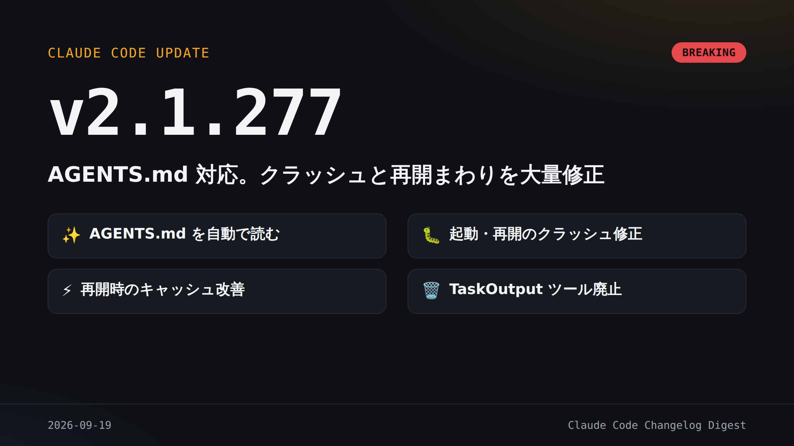

CLAUDE CODE CHANGELOG DIGEST
2026-09-19
AGENTS.md 対応。クラッシュと再開まわりを大量修正

他ツール向けに書いた AGENTS.md がそのまま効き、指示の作り直しが要らない。
TaskOutput ツールが廃止
taskOutputMaxChars と TASK_MAX_OUTPUT_LENGTH は効かなくなった。
AGENTS.md をプロジェクト指示に
CLAUDE.md が無い時に採用。/config で切替。Bedrock 等は未対応。
✨ 新規
AGENTS.md をプロジェクト指示に
背景タスクの更新待ちを表示
ゲートウェイに egress 境界設定
上流へ固定ヘッダーを送る設定
VSCode にサインアウトと /copy
VSCode の /tasks で背景シェル停止
Web の環境選択に個人/組織の別
🔧 更新
Fable が /model に常に並ぶ
入力の不可視文字を除去して確認
サブエージェント結果に出所表示
headless の初回応答が速くなった
rm 確認が対象コマンドを明示
/plugin が所属プラグインを併記
Web の組織環境は読み取り専用に
🐛 修正
起動・再開時のクラッシュ多数
設定ファイルが壊れていても起動
古い版の併用で勝手にログアウト
作業中に打った指示が無視される
-p / SDK が無言で固まる
Grep/Glob が誤って0件と報告
再開でキャッシュを取り逃す
Windows の長パスで PDF 読取失敗
plugin 再インストールで壊れる
🗑️ 廃止・利用不可
TaskOutput ツール
taskOutputMaxChars 設定
TASK_MAX_OUTPUT_LENGTH
claude -p の自動タイトル取得